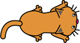

Katz und Maus
Mit Scratch kann man ohne viel Aufwand kleine Spiele erstellen. Wir werden jetzt zusammen ein Katz- und Mausspiel programmieren. Wenn du nicht alles auf Anhieb verstehst, mach dir keine Sorgen. In späteren Kapiteln wird alles noch einmal genau erklärt.
Beim Katz- und Mausspiel steuert der Spieler eine Katze. Die Katze muss in 20 Sekunden versuchen so viele Mäuse wie möglich zu fangen.
Erstelle auf scratch.mit.edu neues Projekt. Klicke unten rechts bei Bühne auf das Bühnenbild 1 und zeichne ein grosses grünes Rechteck. Füge dann die Katzenfigur (Cat 2) hinzu und ändere die Grösse der Figur auf 50 %, siehe Video 1.
Video 1 – Grüner Hintergrund zeichnen und Katz einfügen. (Video: T. Jenni)
Scratch arbeitet mit einer Theater Metapher, d.h. es gibt eine Bühne mit verschiedenen Bühnenbilder. Auf der Bühne können Figuren auftreten. Eine Figur kann verschiedene Kostüme haben und so ihr Aussehen verändern. Wie die Figuren sich verhalten ist im Drehbucht (Skript) festgehalten.
Die Katze

Abb. 1 – Kostüm der Figur "Cat 2".
Die Katze soll immerzu dem Mauszeiger folgen. Dazu richtet sie sich immerzu auf ihn aus und läuft auf ihn zu, wenn er mehr als 5 Schritte entfernt ist. Übernimm für die Katze den Code von Prog. 1. Wenn du Mühe hast die Befehle zu finden, schau dir das Video 2 an.
Wenn die grüne Flagge angeklickt
gehe zu x:(0) y:(0)
zeige dich
setze Stoppuhr zurück
wiederhole bis < (Stoppuhr) > (20) >
falls < (Entfernung von (Mauszeiger v)) > (5)>, dann
gehe (5) er Schritt
ende
drehe dich zu (Mauszeiger v)
ende
verstecke dich
stoppe [alles v]
Prog. 1 – Programm für die Katze
Wir lesen dieses Programm gemeinsam durch und versuchen es zu verstehen. Programme sind wie Kochrezepte. Sie werden von oben nach unten schrittweise ausgeführt.
Wenn die grüne Flagge angeklickt
|
Alle Befehle, welche an diesem Befehl angeschlossen sind werden nacheinander ausgeführt, wenn man oberhalb der Bühne auf die grüne Flagge klickt. |
gehe zu x:(0) y:(0)
|
Die Katze wird auf der Bühne in die Mitte gesetzt. Die Mitte der Bühne hat die Koordinaten x: 0 und y:0. |
zeige dich
|
Eine Figur kann sichtbar oder unsichtbar sein. Mit diesem Befehl wird eine versteckte Figur sichtbar. Es ist gut, dass die Katze erst dann sichtbar wird, wenn sie an der richtigen Stelle auf der Bühne ist. |
setze Stoppuhr zurück
|
Ein Spiel soll jeweils 20 Sekunden dauern. Mit dem Befehl wird die interne Stoppuhr auf null gesetzt. Die Stoppuhr zählt automatisch die Sekunden die verstreichen. Man kann sie auf der Bühne anzeigen lassen, indem man bei der Befehlsliste auf das Kästchen neben dem runden Stoppuhr-Block klickt. |
wiederhole bis < (Stoppuhr) > (20) >
|
Alle Blöcke in diesem Zangenbefehl werden während 20 Sekunden immerzu wiederholt. Wenn die Zeit abgelaufen ist, wird das Programm nacheinander die Befehle bearbeiten, welche unterhalb von diesem Block angeschlossen sind. |
falls < (Entfernung von (Mauszeiger v)) > (5)>, dann
gehe (5) er Schritt
ende
|
Der Befehl in diesem Zangenblock wird nur dann ausgeführt, wenn die Katze mehr als 5 Schritte vom Mauszeiger entfernt ist. In diesem Fall wird sich die Katze fünf Schritte auf den Mauszeiger zubewegen. |
drehe dich zu (Mauszeiger v)
|
Alle Blöcke in diesem Zangenbefehl werden während 20 Sekunden immerzu wiederholt. |
verstecke dich
|
Das Spiel ist zu Ende. Die Katze wird ausgeblendet. |
stoppe [alles v]
|
Alle Programme werden gestoppt. Es ist sinnvoll ein Programm durch einen Stopp-Befehl zu beenden. Auf diese Weise wird alles was noch am laufen ist gestoppt. |
Video 2 – Das Katzenprogramm erstellen (Video: T. Jenni)
Die Maus

Abb. 2 – Kostüm der Figur "Mouse1".
Weiter geht es mit der Maus. Füge die Mausfigur (Mouse1) hinzu und setze ihre Grösse auch auf 50 %. Übernimm anschliessend für sie Prog. 2. Achtung! Der Befehl setze Punkte auf 0 bezieht sich auf eine Variable. Eine Variable kann man sich wie ein Notizzettel vorstellen auf den man eine einzige Zahl notieren kann. Der Name der Variable verrät ihren Zweck. Es handelt sich um den Punktestand, welcher der Spieler während des Spiels hat. Im Video 3 wird gezeigt, wie man eine Variable erstellen kann. In Video 4 siehst du wie man das Mausprogramm zusammenstellt.
Video 3 – Eine neue Variable erstellen (Video: T. Jenni)
Wenn die grüne Flagge angeklickt setze [Punkte v] auf (0) verstecke dich wiederhole fortlaufend gehe zu (Zufallsposition v) setze Richtung auf (Zufallszahl von (0) bis (360)) Grad zeige dich warte bis < wird [Katze v] berührt? > verstecke dich ändere [Punkte v] um (1) spiele Klang [Bite v] ganz warte (Zufallszahl von (0) bis (2)) Sekunden ende
Prog. 2 – Programm für die Maus
Das Mausprogramm lesen wir ebenfalls gemeinsam durch. Befehle die beim Katzenprogramm schon besprochen wurden werden ausgelassen.
setze [Punkte v] auf (0)
|
Die Variable Punkte wird auf den Wert 0 zurückgesetzt. |
wiederhole fortlaufend
|
Wiederhole alle Befehle, die sich in diesem Zangenbefehl befinden, immerzu ohne Ende. |
gehe zu (Zufallsposition v)
|
Die Maus wir an eine zufällige Position verschoben. |
setze Richtung auf (Zufallszahl von (0) bis (360)) Grad
|
Die Maus wird in eine zufällige Richtung gedreht. |
warte bis < wird [Katze v] berührt? >
|
Das Mausprogramm pausiert so lange, bis die Katze die Maus «ber√ºhrt», d.h. frisst. |
ändere [Punkte v] um (1)
|
Die Katz hat die Maus gefangen. Das gibt einen Punkt. Die Variable Punkte wird um eins erhöht. |
spiele Klang [Bite v] ganz
|
Spiele einen Beissklang ab um das Fressen auch akustisch zu unterstreichen. |
warte (Zufallszahl von (0) bis (2)) Sekunden
|
Das Mausprogramm wird zwischen 0 und 2 Sekunden pausiert. |
Video 3 – Das Mausprogramm erstellen (Video: T. Jenni)
Wenn du alles richtig programmiert hast, kannst du nun das Spiel spielen. Schlägst du den Highscore?
‚Äçü•áü•àü•â
Autoren: T. Jenni
Letzte Änderung: 14. Mai 2021

Einsteigerkurs für den BBC micro:bit von T. Jenni, et al. ist lizenziert unter einer Creative Commons Namensnennung - Nicht-kommerziell - Weitergabe unter gleichen Bedingungen 4.0 International Lizenz.